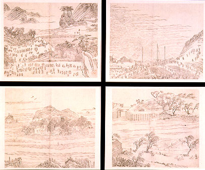
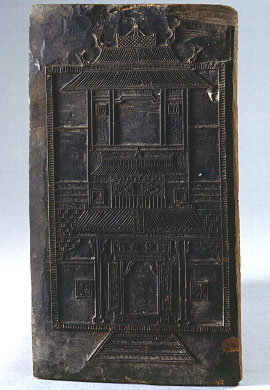

義助慰安婦 —— 李敖百件珍藏義賣藝術品（第74件） 品 名： H4. 台灣木板版刻 預估價： 30 萬 成交價： 30 萬 說 明： 木版畫是從中原流傳到台灣的一種文化。這幅版畫共有四張圖：上兩張圖刻的與官方有關（帽子上的金錢鼠尾），下兩張圖刻的與農家有關，刻工相當精緻。有道是「災梨禍棗」，因為古時候的人常砍梨樹或棗樹製成木片來作版刻。這個藝術品值得收藏，因為它有四個印出來的圖形，及一個罕見的木板模子。  
木版畫是從中原流傳到台灣的一種文化。這幅版畫共有四張圖：上兩張圖刻的與官方有關（帽子上的金錢鼠尾），下兩張圖刻的與農家有關，刻工相當精緻。有道是「災梨禍棗」，因為古時候的人常砍梨樹或棗樹製成木片來作版刻。這個藝術品值得收藏，因為它有四個印出來的圖形，及一個罕見的木板模子。